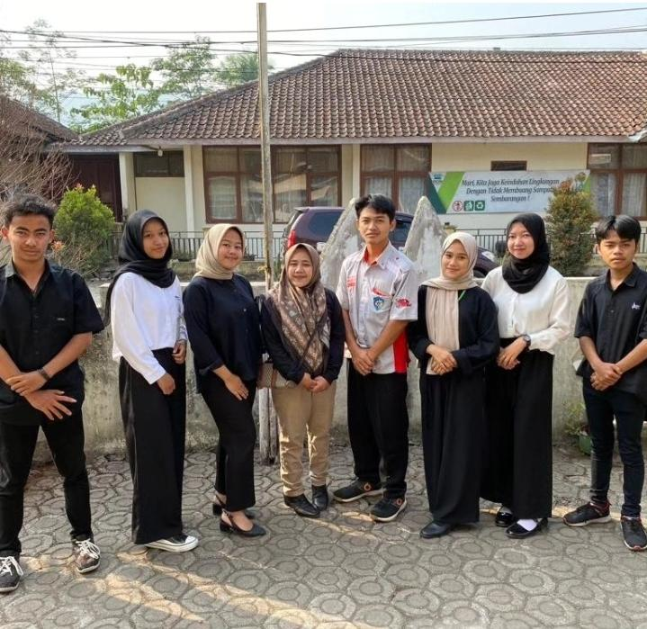
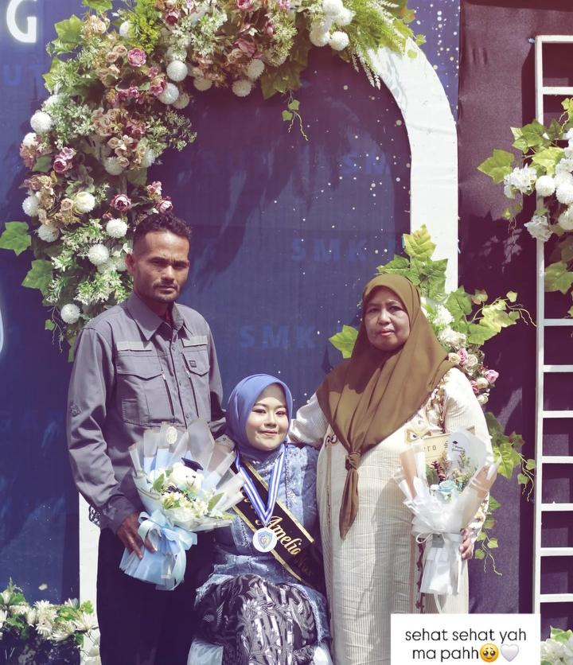
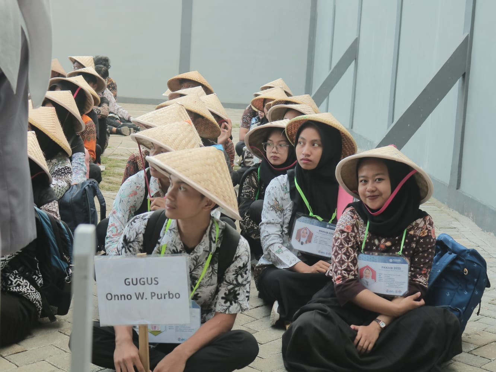
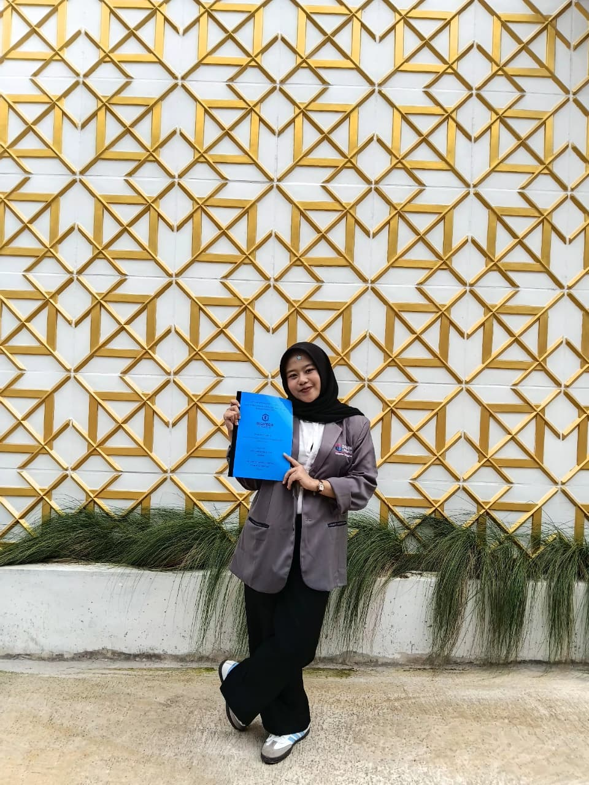

Portal Digital SMKN 11 Garut
Mewujudkan Insan Terampil, Kreatif, dan Berakhlak Mulia di Era Digital.
Mewujudkan Insan Terampil, Kreatif, dan Berakhlak Mulia di Era Digital.

SMKN 11 GARUT adalah sekolah negeri yang berada diJalan Purwabakti No. 24,
RT >01 / RW 07, Desa Cisewu, Kecamatan Cisewu, Kabupaten Garut, Provinsi Jawa Barat.
SMKN 11 Garut adalah lembaga pendidikan kejuruan yang berdedikasi tinggi
VISI:
Mempelajari instalasi jaringan, server, keamanan siber, dan infrastruktur internet.
Mempelajari cara mengelola administrasi perusahaan secara modern, efektif, dan berbasis teknologi.
Mempelajari konsep dasar elektronika, teknik menyolder, perakitan perangkat audio-visual seperti amplifier dan speaker, hingga perbaikan televisi (LCD/LED).

Kegiatan rutin untuk memupuk kedisiplinan dan rasa nasionalisme seluruh siswa.
Selengkapnya
Siswa melakukan praktik langsung di laboratorium sesuai dengan bidang keahlian masing-masing.
Selengkapnya
Sidang PKL adalah ujian lisan untuk mempertanggungjawabkan hasil kerja kamu selama magang di industri.
Selengkapnya
Momen perayaan resmi setelah kamu berhasil menyelesaikan seluruh rangkaian pendidikan Smk.
Selengkapnya

Lokasi: Garut, Jawa Barat, Indonesia
Email: admin@smkn11garut.sch.id
Telepon: (0262) 1234567